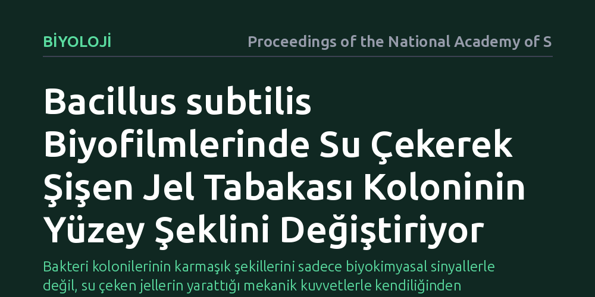

BIYOLOJI · Proceedings of the National Academy of Sciences · 2026-10-17
Araştırmacılar, Bacillus subtilis bakteri biyofilmlerinin yüzeyindeki şekil değişimlerini yönlendiren fiziksel mekanizmaları inceledi. Bulgular, bakterilerin ürettiği ve su çekerek şişen jelin, biyofilm tabakasında mekanik gerilim yaratarak yüzey kırışıklıklarını doğrudan tetiklediğini gösterdi.
Bakteri kolonilerinin karmaşık şekillerini sadece biyokimyasal sinyallerle değil, su çeken jellerin yarattığı mekanik kuvvetlerle kendiliğinden oluşturduğunu gösteriyor.

Biyofilmler, bakterilerin kendi salgıladıkları koruyucu bir matriks içinde bir arada yaşadığı son derece örgütlü mikrobiyal topluluklardır. İnsan dokularından tıbbi cihazlara ve tarım topraklarına kadar pek çok alanda karşılaşılan bu yapılar, bakterilerin antibiyotiklere ve dış tehditlere karşı direncini büyük ölçüde artırır. Biyofilm geliştikçe başlangıçta düz olan koloni yüzeyinde belirgin kırışıklıklar, katlanmalar ve karmaşık desenler ortaya çıkar.
Bilim dünyasında uzun süredir bu şekil dönüşümünün kaynağı tartışılıyordu. Değişimin sadece genetik ve hücresel sinyallerle mi yönetildiği, yoksa fiziksel dinamiklerin mi baskın olduğu sorusu tam olarak yanıtlanamamıştı. Biyofilmler teorik olarak jeller gibi modellense de bu jellerin mekanik davranışlarının koloninin şeklini tam olarak nasıl dönüştürdüğü açık değildi.
Araştırma ekibi, bu sürecin ardındaki mekanik kuvvetleri ortaya çıkarmak için mikrobiyolojide standart bir model olan Bacillus subtilis bakterisini kullandı. Biyofilmin büyüme evreleri boyunca hücrelerin çevreye saldığı hücre dışı polimerik maddelerin (EPS) birikimi ve bu matrisin fiziksel tepkileri adım adım gözlemlendi.
Çalışmada biyofilmin esnek bir zemin üzerinde genişlemesi, elastik özellikleri ve ince filmlerde görülen burkulma mekanizmaları incelendi. Araştırmacılar, biyofilm tabakasının su tutma kapasitesi ile koloninin büyümesi arasındaki ilişkiyi biyofiziksel ölçümler ve mekanik kararsızlık modelleriyle test etti.
Analizler, morfolojik dönüşümün temelinde su çekerek şişen bir polimer jelinin oluşumunun yer aldığını ortaya koydu. Bakteri hücreleri çoğalıp polimer matrisi salgıladıkça, bu polimer ağı çevredeki nemi ve suyu hızla emerek hacmini genişletme eğilimi gösterir.
Jel katmanı genişlemek istese de alt tabaka ve çevre dokular bu genişlemeyi sınırlar. Bu durum, biyofilm içinde biriken yoğun bir mekanik basınca ve gerilime yol açar. Biriken gerilim kritik bir eşiğe ulaştığında malzeme burkulur ve yüzeyde karakteristik kırışıklıklar, katlanmalar ve dalgalı desenler meydana gelir.
Bu bulgu, mikrobiyal toplulukların karmaşık mimariler inşa etmek için karmaşık biyolojik sinyallere ihtiyaç duymadığını kanıtlıyor. Bakteriler sadece su emip şişen bir jel üreterek fizik kurallarının devreye girmesini sağlıyor ve dayanıklı, katlanmış savunma yapılarını kendiliğinden oluşturuyor.
Biyofilm mekaniğini anlamak, tıptan endüstriye pek çok alanda kontrol imkanı sunabilir. Zararlı bakterilerin yüzeylerde dirençli tabakalar kurmasını engellemek veya tarımda faydalı bakterilerin köklere daha iyi tutunmasını sağlamak için jelin su çekme ve şişme dinamiklerini hedef alan yeni stratejiler geliştirilebilir.